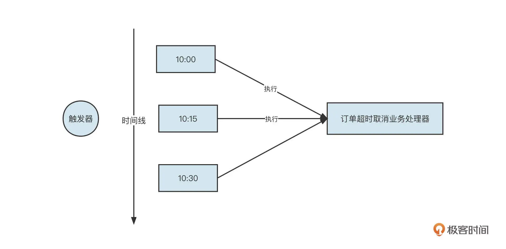
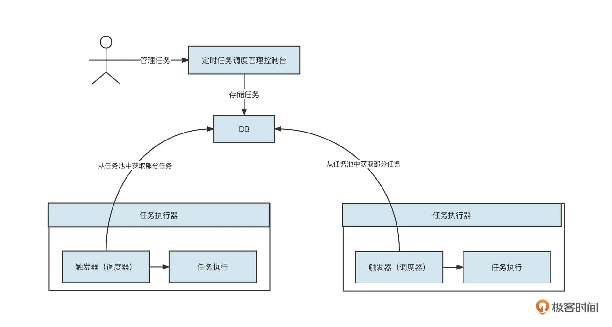

- 00 开篇词 为什么中间件对分布式架构体系来说这么重要？.md.html
- 01 中间件生态（上）：有哪些类型的中间件？.md.html
- 02 中间件生态（下）：同类型的中间件如何进行选型？.md.html
- 03 数组与链表：存储设计的基石有哪些？.md.html
- 04 红黑树：图解红黑树的构造过程与应用场景.md.html
- 05 多线程：多线程编程有哪些常见的设计模式？.md.html
- 06 锁：如何理解锁的同步阻塞队列与条件队列？.md.html
- 07 NIO：手撸一个简易的主从多Reactor线程模型.md.html
- 08 Netty：如何优雅地处理网络读写，制定网络通信协议？.md.html
- 08 加餐 中间件底层的通用设计理念.md.html
- 09 技术选型：如何选择微服务框架和注册中心？.md.html
- 10 设计原理：Dubbo核心设计原理剖析.md.html
- 11 案例：如何基于Dubbo进行网关设计？.md.html
- 12 案例：如何实现蓝绿发布？.md.html
- 13 技术选型：如何根据应用场景选择合适的消息中间件？.md.html
- 14 性能之道：RocketMQ与Kafka高性能设计对比.md.html
- 15 案例：消息中间件如何实现蓝绿？.md.html
- 16 案例：如何提升RocketMQ顺序消费性能？.md.html
- 17 运维：如何运维日均亿级的消息集群？.md.html
- 18 案例：如何排查RocketMQ消息发送超时故障？.md.html
- 19 案例：如何排查RocketMQ消息消费积压问题？.md.html
- 20 技术选型：分布式定时调度框架的功能和未来.md.html
- 21 设计理念：如何基于ZooKeeper设计准实时架构？.md.html
- 22 案例：使用分布式调度框架该考虑哪些问题？.md.html
- 23 案例：如何在生产环境进行全链路压测？.md.html
- 大咖助阵 高楼：我们应该如何学习中间件？.md.html
- 用户故事 学而时习之，不亦乐乎.md.html
- 用户故事 愿做技术的追梦人.md.html
- 用户故事 浪费时间也是为了珍惜时间.md.html
- 结束语 坚持不懈，越努力越幸运.md.html
- 捐赠
20 技术选型：分布式定时调度框架的功能和未来
你好，我是丁威。
从这节课开始，我们将进入一个新的模块：定时调度中间件。
定时调度在业务开发领域的应用非常普遍，它通常会出现在数据清洗、批处理等应用场景中。我们这一模块总共分为三讲，首先，我们要来了解一下分布式定时调度框架的设计目标和未来，然后我会重点介绍一种基于 ZooKeeper 配置中心的编程模型，最后，我们会以一个实际场景串起分布式调度框架的要点。
定时调度框架要解决什么问题？市面上有哪些优秀的定时调度框架？定时调度未来的发展趋势又是什么？这节课我们就来聊聊这些问题。
定时调度功能需求
在大部分交易类场景下，比方说购物网站或者购票系统中，都会有一个特殊的业务规则：如果用户下单后超过指定时间未支付，平台将自动取消该订单。
定时延迟触发机制
要想实现这个功能，第一个必须具备的就是定时延迟触发机制。目前在定时调度领域，触发器都是基于 cron 表达式来定义的。cron 表达式支持按日历的概念来定义定时语义。例如，每周五上午 10 点，每个工作日上午 10 点等。我们这节课不会详细介绍怎么编写 cron 表达式，因为现在很多网站都支持快速生成 cron 表达式。如果有需要，你可以看看这个网站。
一旦解决了定时任务的触发问题，要在用户没有支付时及时取消订单、释放库存的需求就变得比较简单了。我们只需要编写对应的订单超时逻辑，然后触发器就可以根据定义的 cron 表达式在指定的时间点调用业务执行器，完成业务逻辑。

但一个项目中不可能只有一个任务，部门、公司更不可能只有一个任务，当需要管理的任务数量较多时，新的问题接踵而来：如何有效管理这些任务呢？
任务可视化管理机制
这样一来，定时调度又衍生了任务可视化管理需求，它通常包含：
任务的新建、编辑、查看；
任务的启动、停止、重启；
任务的调度历史、执行情况。
引入了任务可视化管理后，定时调度的架构基本是下面这个样子：
到这里，任务触发机制和任务可视化管理加起来，基本构成了定时调度框架的标配。它们可以帮助框架使用者方便地管理定时调度任务。但随着定时调度任务的逐渐增多，与之对应的是对可用性提出了更高的要求，也就是对触发器的分布式部署功能提出了更高的要求。支持分布式部署的架构如下图所示：

在分布式架构体系中，系统可以部署多个任务执行器，每一个任务执行器负责调度一部分任务。如果一个任务调度器宕机，任务可以转移到其他存活的调度器上去执行，从而实现高可用。
但随着业务的不断增长，单个定时调度任务需要处理的数据越来越多，单个任务执行的时长也逐步增加，这时，数据处理就容易出现较大延迟，当一个调度任务只在一个节点运行已经无法满足日益增长的数据要求时，提升性能就变得迫在眉睫了。
数据分片机制
为此，定时调度框架在分布式部署的基础上又引入了数据分片机制。调度触发器触发一次调度任务后，先计算本次调度需要执行多少数据，然后将这些数据按照分片算法切分成多份。这些独立的分片被包装为一个子任务，并被下发给不同的任务执行器。这样就实现了一个任务在不同进程之间的调度，从而提升了系统并发度。
错过执行任务重触发机制
通过分布式部署与数据切分后，定时框架就具备了高可用性、高性能和弹性扩缩容。不过在此基础上，定时调度框架还要提供错过执行任务重触发机制，这主要是为了避免任务调度次数丢失。
这个机制主要解决的是一个任务的执行时间大于任务调度频率的问题。例如，一个任务每隔 5s 调度一次，但如果一次调度期间业务的执行时间为 15s，它的调度触发如表格所示：
请你思考一下，错过执行的调度还需要继续执行吗？还是要等待下一次调度任务被触发呢？通常，定时调度应对这种情况应该提供一个参数供人选择。
当然，在实际业务中，还有一类定时调度任务更复杂，那就是有顺序要求的定时调度。只有执行完上一次调度任务之后，才能触发新的定时调度任务，通常的解决方案是，基于有向无环图（DAG）来定义作业之间的依赖。
定时调度框架发展与选型
了解了定时调度的基本功能需求后，我们再来看看市面上主流的分布式调度框架。
Quartz
互联网还没兴起时，Quartz 是定时调度框架的王者。这是一个非常经典的分布式调度框架，它是基于数据库来实现任务的分配的。
Quartz 集群部署如下图所示：
各个 Quartz 调度节点之间并不通信。
在 Quartz 中，节点默认每隔 20s 会查询数据库中的 QRTZ_TRIGGERS，不断地去获取并和其他节点抢占 Trigger。一旦该节点获取了 Trigger 的控制权，本次任务的调度就由调度器执行。
具体的抢占逻辑是，调度器尝试获取 TRIGGER_ACCESS 锁，成功获取锁的调度器执行本次调度，未获取锁的调度器进行锁等待，一旦获取锁的调度器释放锁，其他调度器就可以接管。具体的流程如下图所示：
Quartz 的使用方法非常简单，而且能够非常方便地支持 Spring 容器管理。但是如果需要管理的任务越来越多，特别是当触发周期很短的任务（例如每 10s 调度一次，每 1min 调度一次）越来越多时，基于数据库悲观锁的分布式调度机制就存在明显的性能瓶颈，无法支持快速发展的业务了。
伴随着互联网业务的不断扩大，互联网大厂都开源了自己的分布式调度框架，其中最典型代表就是 ElasticJob 和 XXL-JOB。这两款调度框架的调度机制底层使用的都是 Quartz。接下来我们就分别了解一下它们。
ElasticJob
ElasticJob 是一个分布式调度解决方案，最早由当当网开源，目前已经成为 Apache ShardingSphere 旗下的子项目。ElasticJob 由 2 个相互独立的子项目 ElasticJob-Lite 和 ElasticJob-Cloud 组成，但是因为目前市面上主要使用的是 ElasticJob-Lite，所以接下来我们讲到的 ElasticJob，主要指的就是这个 ElasticJob-Lite。
ElasticJob 的定位是轻量级的无中心化解决方案，其架构设计图如下：
使用 ElasticJob 进行开发比较简单，通过在应用程序中引入 ElasticJob 的客户端 Jar 包，就可以完成定时调度任务业务逻辑。ElasticJob 支持分布式部署、数据分片、弹性扩缩容、任务执行失败故障转移等高级特性。
启动 ElasticJob 的各个任务调度器后，当需要执行一个新的调度任务时，集群中所有的调度器会选举出一个 Leader，后续的调度由 Leader 来统一承担。其他的调度器作为这个任务的备份。一旦 Leader 失败，其他备份调度器就会重新进行选举。
ElasticJob 在功能维度也很丰富，它有下面几大亮点。
- 弹性调度
ElasticJob 支持在分布式场景下的数据分片与高可用，支持水平扩展任务从而提高吞吐量，任务的处理能力可以随资源的配备进行弹性伸缩。
- 作业治理
ElasticJob 支持分片失效转移、错过作业重新执行等特性。
- 可视化管控
ElasticJob 提供了相对完善的运维作业管控端，支持作业历史数据追踪、注册中心管理等功能。
- 作业开放生态
ElasticJob 提供了可扩展到作业类型的统一接口，能够与 Spring 依赖注入无缝整合。
稍显遗憾的是，ElasticJob 对 ZooKeeper 具有强依赖，所有核心功能的实现都依赖 ZooKeeper，并且调度与任务并未分离，一旦 ZooKeeper 出现问题，整个调度系统都可能瘫痪。
XXL-JOB
我们再来看看由大众点评开源的 XXL-JOB 分布式调度框架。
XXL-JOB 的一个核心设计亮点是，它将调度行为抽象形成了“调度中心”公共平台，平台自身并不承担业务逻辑，而是由“调度中心”发起调度请求，实现了“调度”和“任务”之间的解耦合，它的核心架构设计图如下：
XXL-JOB 的整体架构分为调度中心与执行器两个部分，我们简单说明一下它们的具体职责。
调度模块（调度中心）
负责管理调度信息，按照调度配置发出调度请求，自身不承担业务代码。调度系统与任务解耦，提高了系统可用性和稳定性，同时，调度系统的性能不再受限于任务模块。
调度中心支持可视化，能够简单且动态地管理调度信息，这些操作包括任务新建，更新，删除，Glue 开发和任务报警等，上面所有操作都会实时生效。同时，调度中心还支持监控调度结果和执行日志，支持执行器 Failover。
执行模块（执行器）
负责接收调度请求并执行任务逻辑。任务模块专注于任务的执行等操作，开发和维护更加简单和高效。
执行器的主要任务就是接收“调度中心”的执行请求、终止请求和日志请求等。
XXL-JOB 与 ElasticJob 是两款非常优秀的分布式调度框架，我们针对分布式调度中的核心技术对它们做一个简单的对比：
总的来看，XXL-JOB 的集群、分布式调度是基于数据库的锁机制开发的，在处理数据量较大的任务时，还是会存在明显瓶颈。但 XXL-JOB 的应用类功能更加完善，并且在架构上采取调度与任务执行相分离的架构方案，扩展性更强。
ElasticJob 更加关注数据，它的弹性扩容和数据分片机制更加灵活高效，能最大限度地利用分布式服务器的资源，性能强大。如果调度任务需要处理的数据量非常庞大，强烈推荐 ElasticJob。
定时调度框架的自研思路
在这节课的最后，我想给你分享一下我们公司关于定时调度的自研思路。
我们前面看到的 XXL-JOB 和 ElasticJob 各有所长，你可能会想，如果能将它们的优点融合在一起就完美了。
不错，我们公司就是在充分调研了 ElasticJob 和 XXL-JOB 之后，决定自研定时调度框架。
我们重点吸收了 XXL-JOB 的“调度”和“任务”执行解耦合的思路。调度平台只负责任务的管理、触发，然后通过 RPC 等手段远程调度任务的执行，使得框架高度平台化。具体的运行效果如下：
而我们调度器的数据分片、分布式调度、任务容错机制基本都参与 ElasticJob 进行，同时，我们还支持容器部署，使用容器部署能极大地提高资源利用率。
我们的定时调度框架通常有两类任务：批处理和定时调度。
批处理指的是在处理完一个批次后，如果有新的数据到达，就继续处理下一个批次。如果没有任务可执行，就休眠一段时间。
定时调度通常类似于每天凌晨几点定时执行这类任务。如果采用传统的虚拟机部署，这种任务一天只执行一次。但任务执行完成后，进程一直存活，虚拟机的资源一直被占用。但如果采用容器部署，执行完任务后，调度器就可以退出，等下一次触发时再创建新的调度器。
总结
好了，我们这节课就介绍到这里了。
在这节课的开始，我们从一个实际的使用场景出发，逐步引出了定时调度通常的功能需求，它们包括触发器、任务可视化管理、分布式部署、数据分片、故障转移、任务依赖等。
紧接着，我介绍了目前主流的分布式定时调度框架：Quartz、XXL-JOB 和 ElasticJob。我们重点对比了 XXL-JOB 和 ElasticJob 的差异。其中，XXL-JOB 的一个显著的设计亮点是调度与任务执行的解耦合，而 ElasticJob 在分布式部署、数据分片等机制上的优势则非常明显，适合处理数据量较大的调度任务。
最后，我还简单介绍了我所在公司自研分布式调度框架的一些思路。如果你的公司有类似的需求，应该会给你一些启发。
课后题
学完这节课，我也给你留一道课后题。
分布式定时调度中一个最具亮点的功能应该就是数据分片机制了。那它是如何做到动态扩缩容的呢？在这里强烈建议你去研读一下 ElasticJob 在这方面的源码，一定会对你理解分布式调度框架大有裨益。
如果你在阅读源码上有一定难度，也可以参考我写的ElasticJob 系列文章。欢迎你在留言区与我交流讨论，我们下节课再见！
© 2019 - 2023 Liangliang Lee. Powered by gin and hexo-theme-book.